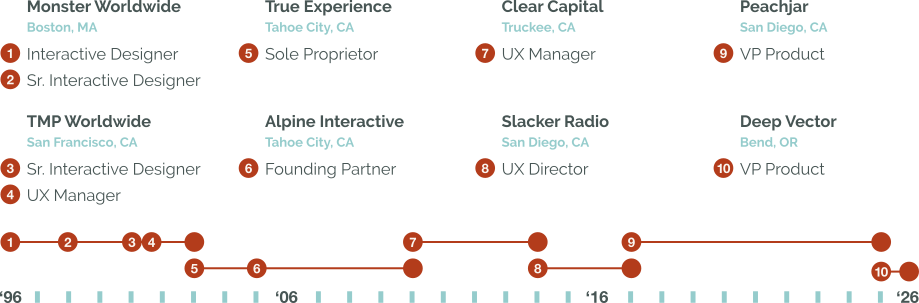
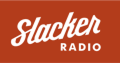

Drove the creation of a product from concept to launch, reaching approximately 25% of U.S. parents. Within three months, the new app doubled a key business KPI and supported millions of monthly active users.
Jared’s career has spanned established enterprise environments, high-growth startups, and boutique agencies. Specializing in complex B2B and B2C SaaS platforms, he has guided digital products from initial concept to multi-million user scale across diverse market sectors.
Throughout his career, Jared has been fortunate to collaborate with many talented professionals. He finds working alongside strong teams to create meaningful user experiences to be incredibly rewarding.
Drove the creation of a product from concept to launch, reaching approximately 25% of U.S. parents. Within three months, the new app doubled a key business KPI and supported millions of monthly active users.
Led the complete re-imagination of a B2B and B2C platform serving over 600 school districts, nearly 15 million parents, and community organizations across the U.S., driving a revenue increase from $5 million to $8 million.
Reached and maintained a 5-star rating in the App Store for Slacker Radio’s mobile app by distilling user feedback, reviews, statistics, and competitive analysis to prioritize and manage ongoing enhancements.
Drove a series of major initiatives for Slacker Radio from conception to release while guiding teams through agile development, resulting in increases in registrations, engagement, conversion rates, and return usage.
Led the design of the first enterprise SaaS solution for the country’s largest financial institutions, scaling it from conception to over $5 million in annual revenue.
Directed interactive strategy, designed interfaces, guided development, and drove marketing for a web-based travel agency from startup to $2 million in annual revenue.
Co-founded an interactive agency that collaborated with over 50 clients across diverse industries entirely via word-of-mouth, achieving a 98.2% client satisfaction rate. Designed a web app that initiated white-label product discussions with the Ritz-Carlton.
Proposed, recruited, integrated, and managed two multi-location Product Design teams. One for TMP Worldwide’s U.S. operations serving various Fortune 500 clients, and another supporting Clear Capital’s product lines dedicated to top-tier U.S. financial institutions.
Established and supported lean interactive development across nine major centers in five countries, contributing to TMP Worldwide’s rise from the 7th to the 2nd ranked global interactive agency.
As the 16th employee, played a lead role in designing and marketing Monster.com as it quickly scaled to become the world's leading career site, serving nine countries with over 10 million unique monthly visits.
Shortly after the Mosaic web browser introduced the World Wide Web to the general public, Jared joined the startup The Monster Board (later known as Monster). It was there that he began putting in his 10,000 hours and fell in love with crafting great user experiences.
When TMP Worldwide Inc. became Monster's parent company, he began developing interactive solutions for Fortune 500 companies, focusing on recruitment websites and broader digital marketing needs. While leading teams to deliver outstanding experiences through user-centered design, he also began training flagship offices worldwide in a lean interactive development process.
After the dot-com bubble burst, he co-founded an interactive agency aimed at growing startups and small businesses. The agency thrived on close client relationships while earning a steady stream of referrals and satisfied clients across various industries from construction to hospitality.

This entrepreneurial path brought him to Clear Capital, where he helped develop the financial industry's first SaaS solution for the largest U.S. banks. He led the design of a new product line for a tech-starved industry, leveraging big data and cutting-edge technology to deliver high-impact results.
Following the successful rollout of the SaaS solution, he joined Slacker Radio to help execute a blue ocean strategy. In the highly competitive internet radio market, where technological advances allowed competitors to quickly keep pace, he focused on delivering a remarkable user experience as the key differentiator.
With Slacker Radio's acquisition by LiveOne, he sought to channel his professional energy into supporting youth development. This inspired him to join Peachjar where he helped enrich children in grades K through 12 by expanding their access to opportunities outside the classroom, both on campus and within the community.
Most recently, Jared transitioned to independent product and design leadership, collaborating with former colleagues in various industries. The Deep Vector engagement evolved into an extended effort to refactor their product, where he helped integrate AI-assisted enhancements to better serve foundational users while designing new workflows to broaden the platform's reach to a wider segment of insurance professionals.
